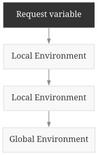
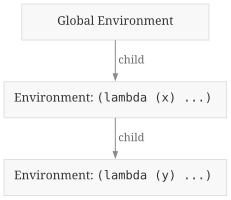

Building a Lisp Interpreter (in Rust) - Part 3
Table of Contents
This is Part 3 (Lambdas) of a 3-part series. Reading: Part 1 (Parsing) | Part 2 (Evaluation)
1. Introduction
This is the third and final part of the Building a Lisp Interpreter (in Rust)
series. In parts 1 and 2, we implemented the parser and eval.
In this part, we will add user-defined functions via lambda.
1.1. Lambda
lambda creates a function. It takes a list of argument names followed by one
or more body expressions.
;; Assign and call.
(define add (lambda (a b) (+ a b)))
(add 1 2) ;; 3
#[test]
fn define_and_call_lambda() {
let env = Environment::default().with_value("+", Val::Function(add));
eval_str("(define add (lambda (a b) (+ a b)))", &env).unwrap();
assert_eq!(eval_str("(add 4 5)", &env).unwrap(), Val::Int(9));
}
We can also call the lambda immediately.
;; Use a lambda directly without assigning it.
((lambda (a b) (+ a b)) 1 2) ;; 3
#[test]
fn call_lambda_immediately() {
let env = Environment::default().with_value("+", Val::Function(add));
eval_str("(define y (+ 1 2 3))", &env).unwrap();
assert_eq!(eval_str("((lambda (a b) (+ a b)) 1 2)", &env).unwrap(), Val::Int(3));
}
We can also create a lambda that creates a lambda.
(define adder (lambda (x) (lambda (y) (+ x y))))
(define add-10 (adder 10))
(add-10 5) ;; 15
#[test]
fn lambda_captures_values() {
let env = Environment::default().with_value("+", Val::Function(add));
eval_str("(define adder (lambda (x) (lambda (y) (+ x y))))", &env).unwrap();
eval_str("(define add-10 (adder 10))", &env).unwrap();
assert_eq!(eval_str("(add-10 4)", &env).unwrap(), Val::Int(14));
}
2. Design
2.1. Representation
Lambdas are regular old objects like integers and … the Rust based functions
we already have. We will create a new variant within Val to reference our new
Lambda struct. The Lambda will store the arguments and the code
associated with the lambda.
pub struct Lambda {
args: Vec<String>,
exprs: Vec<Val>,
}
2.2. Variables
Our Lisp interpreter is able to reference values within then Environment
through a call to eval. Within a lambda call, the arguments are part of the
environment. However, so is the parent global environment. In the case of nested
lambda, a lambda's lambda parent can also be in scope.
To do this, we will create a new Environment to store our arguments and local
variables. However, the Environment can also fallback to a parent
Environment to retrieve variables.

3. Implementation
3.1. Environment
Environment will keep its existing getters and setters, with updates to use
the new hashmap storage.. We will be adding create_child which will return a
new environment that references &self as a parent. To store the references, we
will use Arc<Mutex<T>>'s single-threaded cousin, Rc<RefCell<T>>.
#[derive(Clone, Default, PartialEq)]
pub struct Environment {
values: Rc<RefCell<HashMap<String, Val>>>,
parent: Option<Rc<Environment>>,
}
impl std::fmt::Debug for Environment {
fn fmt(&self, f: &mut std::fmt::Formatter<'_>) -> std::fmt::Result {
f.debug_struct("Environment")
.field("values", &self.values)
// Prevent too many values from printing.
.field("parent", &self.parent.as_ref().map(|_| "..."))
.finish()
}
}
Here are some of our existing functions, updated to work with the new hashmap storage:
impl Environment {
pub fn with_value(self, name: impl Into<String>, val: Val) -> Environment {
self.set(name.into(), val);
self
}
pub fn set(&self, name: impl Into<String>, val: Val) {
self.values.borrow_mut().insert(name.into(), val);
}
pub fn get(&self, name: &str) -> Option<Val> {
self.values
.borrow()
.get(name)
.cloned()
.or_else(|| self.parent.as_ref().and_then(|p| p.get(name)))
}
}
To create a new environment with a parent, we will clone the hashmap cell to reuse the reference.
impl Environment {
pub fn create_child(&self, children: impl Iterator<Item = (String, Val)>) -> Environment {
Environment {
values: Rc::new(RefCell::new(HashMap::from_iter(children))),
parent: Some(Rc::new(self.clone())),
}
}
}
3.2. Closures
In our example, we created a lambda that referenced its parent Environment.
(define adder (lambda (x) (lambda (y) (+ x y))))
(define add-10 (adder 10))
(add-10 5) ;; 15
The inner (lambda (y) (+ x y)) refers to the variable x which, is defined in
its parent Environment. When we create a lambda, we will capture the current
environment.

This makes our final Val and Lambda values be:
#[allow(unpredictable_function_pointer_comparisons)]
#[derive(Clone, Debug, PartialEq)]
pub enum Val {
Int(i64),
Bool(bool),
Symbol(String),
List(Vec<Val>),
Function(Function),
Lambda(Lambda),
}
#[derive(Clone, PartialEq)]
pub struct Lambda {
args: Vec<String>,
exprs: Vec<Val>,
env: Environment,
}
3.3. Creating Lambdas
Lambda creation will use the same codepath as our other special forms, "if" and "define".
...
// Handle special forms
if let Val::Symbol(s) = func_expr {
match s.as_str() {
"if" => return eval_if(arg_vals, env),
"define" => return eval_define(arg_vals, env),
"lambda" => return make_lambda(arg_vals, env),
_ => {}
}
}
The actual creation of a Lambda is rather simple. The first argument must be a
list of symbols that will be stored as the arguments. Then, the rest is stored
as is in the body.
fn make_lambda(args: &[Val], env: &Environment) -> Result<Val, Error> {
let [Val::List(args), exprs @ ..] = args else {
return Err(Error::InvalidLambda);
};
let args = vals_as_symbols(args).ok_or(Error::InvalidLambda)?;
let lambda = Lambda {
args: args,
exprs: exprs.iter().cloned().collect(),
env: env.clone(),
};
Ok(Val::Lambda(lambda))
}
fn vals_as_symbols(vals: &[Val]) -> Option<Vec<String>> {
let mut res = Vec::with_capacity(vals.len());
for v in vals {
let Val::Symbol(sym) = v else {
return None;
};
res.push(sym.clone());
}
Some(res)
}
3.4. Evaluating Lambdas
To actually allow calling Lambdas, we will hook into the same spot as
Val::Function evaluation. We use a very similar pattern of collecting the
arguments into a Vec and evaluating the result.
fn eval_list(expr: &[Val], env: &Environment) -> Result<Val, Error> {
// 1. Evaluate the first argument.
let (func_expr, arg_vals) = match expr {
[] => return Err(Error::Other("empty function call")),
[first, rest @ ..] => (first, rest),
};
// Handle special forms
if let Val::Symbol(s) = func_expr {
match s.as_str() {
"if" => return eval_if(arg_vals, env),
"define" => return eval_define(arg_vals, env),
"lambda" => return make_lambda(arg_vals, env),
_ => {}
}
}
let func_val = eval(func_expr, env)?;
// 2. Evaluate the function
match func_val {
Val::Function(f) => {
let args: Vec<Val> = arg_vals
.iter()
.map(|x| eval(x, env))
.collect::<Result<_, _>>()?;
f(&args)
}
Val::Lambda(f) => {
let args: Vec<Val> = arg_vals
.iter()
.map(|x| eval(x, env))
.collect::<Result<_, _>>()?;
f.eval(&args)
}
_ => Err(Error::ValueNotCallable(func_val)),
}
}
For the actual evaluation, we need to:
- Bind the arguments onto a new environment.
- Evaluate each expression.
- Return the last value.
We probably should have done this earlier, but we introduce an
Undefined value for instances where no default value makes sense.
impl Lambda {
pub fn eval(&self, args: &[Val]) -> Result<Val, Error> {
let bindings = self.args.iter().cloned().zip(args.iter().cloned());
let env = self.env.create_child(bindings);
let mut res = Val::Undefined;
for expr in self.exprs.iter() {
res = eval(expr, &env)?;
}
Ok(res)
}
}
4. (Optional) Scoping
Our Lisp implements lexical scoping, also known as the correct scoping. However, there is a tempting mistake when implementing variable retrieval…
eval takes an env parameter that is passed it along everywhere. When adding
lambda, the natural extension is to reuse that env and pass it to
Lambda::eval as well. This leads to dynamic scoping, where a lambda inherits
the caller's environment instead of the environment it was defined in.
Here is the eval code using the available env instead of the captured env.
impl Lambda {
pub fn eval(&self, env: &Environment, args: &[Val]) -> Result<Val, Error> {
let bindings = self.args.iter().cloned().zip(args.iter().cloned());
let env = env.create_child(bindings);
let mut res = Val::Undefined;
for expr in self.exprs.iter() {
res = eval(expr, &env)?;
}
Ok(res)
}
}
(define x 1)
(define get-x (lambda () x))
(define shadow-x (lambda (x) (get-x)))
(shadow-x 99)
;; Lexical: 1 (get-x captured x=1 at definition)
;; Dynamic: 99 (get-x inherits x=99 from caller)
With dynamic scoping, shadow-x creates an environment where the argument x
is bound to 99. When it calls get-x, the environment within shadow-x is
used, so get-x returns 99.
With lexical scoping, get-x captured the global environment at definition
time, where x is 1. The caller's x is invisible to it, so it returns
1.
Dynamic scoping is usually the wrong thing and quite rare in modern programming. However, it has some useful properties. In the context of global variables, it can be quite useful to purposefully override the value. Dynamic scoping can be used to tweak a value for a one-time use, which is common for unit tests.
Scheme R7RS allows opting into dynamic scoping for some values. This is under "parameters".
;; Define a parameter that will use dynamic scoping.
(define my-param (make-parameter 10))
;; Can be called as a function to retrieve its value.
(display (my-param)) ;; Outputs: 10
(newline)
;; Can use the parameterize form to set the value within the scope.
(parameterize ((my-param 20))
(display (my-param))) ;; Outputs: 20
(newline)
(display (my-param)) ;; Outputs: 10 (back to original)
5. Conclusion
With lambda, our interpreter is complete. The final interpreter can handle
programs like this:
(define compose
(lambda (f g)
(lambda (x) (f (g x)))))
(define add1 (lambda (x) (+ x 1)))
(define double (lambda (x) (+ x x)))
(define add1-then-double (compose double add1))
(add1-then-double 4) ;; 10
You can see the full implementation on git.wmedrano.dev/wmedrano/rust-lisp-interpreter-tutorial.